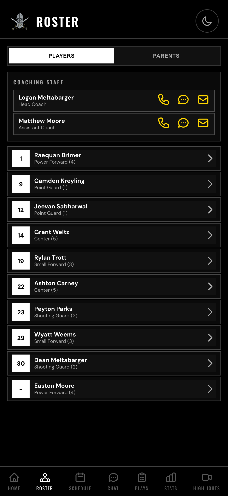
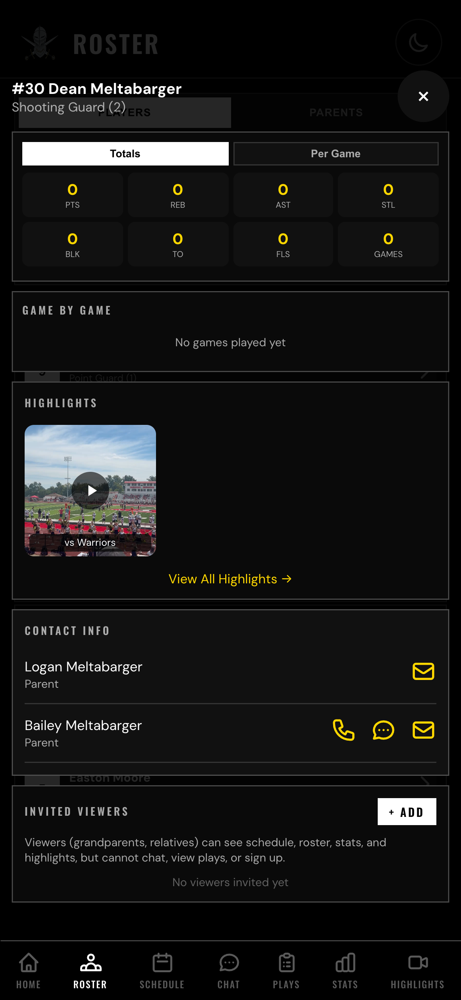
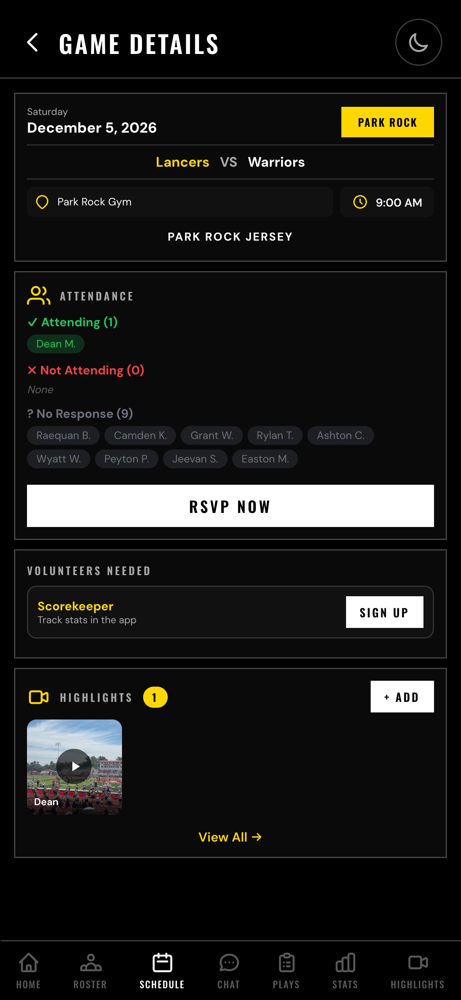
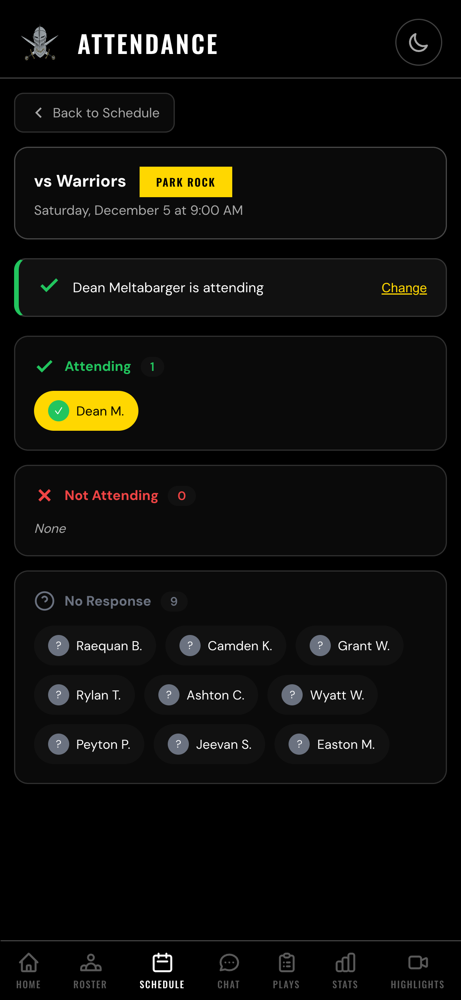
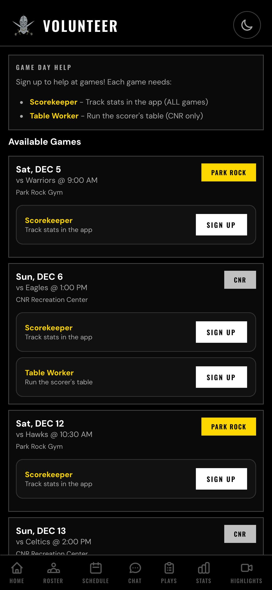
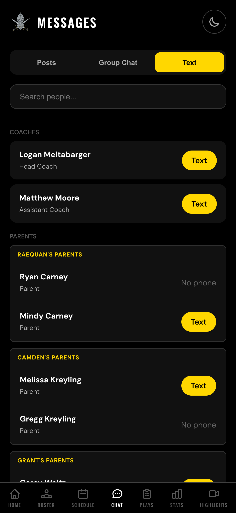
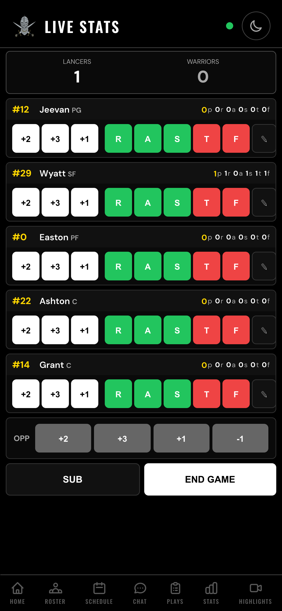

Jr. Lancers Basketball App
User Guide
A complete guide to using all the features in the Jr. Lancers team app.
Home Screen
The home screen is your dashboard showing the most important info at a glance.
What you'll see:
- Your Player Info - Your child's name, number, and position
- Next Game/Practice - Date, time, opponent, and location
- Season Record - Team wins and losses
- My Volunteering - Your completed and upcoming volunteer roles
- Sign Up to Volunteer - Quick link to volunteer for games
Tip: Tap the moon icon in the header to switch to light mode!
Roster
View all players, parents, and coaches.

Roster - Players Tab
Features:
- View all players with their numbers and positions
- See coaching staff at the top
- Tap the Parents tab to see parent contact info
- Tap any player card to view their full profile
Player Profile
Tap any player to see their detailed profile:

Player Profile
The player profile shows:
- Stats - Season totals and per-game averages
- Highlights - Photos and videos featuring this player
- Contact Info - Parent names, phone, and email
- Invited Viewers - Family members you've invited (see below)
Invite Viewers (Family Members)
You can invite grandparents, aunts, uncles, or other family members to view the app.
To invite a viewer:
- Open your child's player profile
- Scroll down to "Invited Viewers"
- Tap "+ Add"
- Enter their email, name, and relationship
- Tap "Send Invite"
They'll receive an email with instructions to create their account.
Note: Viewers can see schedules, roster, stats, and highlights, but cannot access chat or the playbook.
Schedule
View all games and practices for the season.
For each event you'll see:
- Date and time
- Type (Game or Practice)
- Opponent (for games)
- Location
- Attendance count
Tap any event to see full details, RSVP, and volunteer.
Game Details

Game Details
The game detail page shows:
- Attendance - Who's coming, who can't make it
- RSVP Button - Respond for your child
- Volunteers Needed - Sign up to help
- Highlights - Photos/videos from this game
Attendance (RSVP)
Let Coach know if your child can make it to each game.

Attendance / RSVP
To RSVP:
- Go to Schedule and tap a game
- Tap "RSVP Now"
- Select "Yes, attending" or "Can't make it"
You can change your response anytime by tapping "Change".
Please RSVP as early as possible so Coach can plan accordingly!
Volunteering
Sign up to help at games!

Volunteer Sign-ups
| Role |
What You Do |
| Scorekeeper |
Track live stats in the app during the game |
| Table Worker |
Run the official scorer's table (CNR games only) |
To sign up:
- Go to a game's detail page or the Volunteers section
- Find a role that needs filling
- Tap "Sign Up"
Chat (Messages)
The Chat section has three tabs for team communication.
Group Chat (Default)
Real-time messaging with the whole team.
To send a message:
- Type your message in the box at the bottom
- Tap the send button (arrow icon)
Posts Tab
Coach announcements that everyone can see and comment on.
- Read important updates from Coach
- React to posts with emojis
- Tap a post to view and add comments
Text Tab
Quick access to text (SMS) any parent or coach directly.

Text Tab - Contact Directory
To text someone:
- Find the person (use search if needed)
- Tap the "Text" button
- Your phone's messaging app opens with their number
Great for private conversations or coordinating carpools!
Playbook
View all the team's plays with animated diagrams.
How to use:
- Select a category: VS MAN, VS ZONE, or INBOUND
- Use the "Highlight" dropdown to show your child's position
- Tap "Go" to watch the play animate
- Read the steps below the diagram
Tip: Great for practicing plays at home with your child!
Live Game Stats
View stats during games or track them as Scorekeeper.
Viewing Stats
- During games, stats update in real-time
- Go to Stats tab and select a game
- See points, rebounds, assists, steals, and more for each player
Tracking Stats (Scorekeeper)
If you signed up as Scorekeeper, here's how to track stats:

Scorekeeper Interface
Stat Buttons (for each player on court):
| Button |
What It Records |
| +2 |
Made 2-point shot |
| +3 |
Made 3-point shot |
| +1 |
Made free throw |
| R (green) |
Rebound |
| A (green) |
Assist |
| S (yellow) |
Steal |
| T (red) |
Turnover |
| F (red) |
Foul |
Making Substitutions
To substitute players:
- Tap the "SUB" button at the bottom
- Players currently ON court are highlighted
- Tap a player ON court to take them OUT
- Tap a player OFF court to put them IN
- Tap "Done" when finished
Keep exactly 5 players on court at all times.
Tracking Opponent Score
Use the OPP row at the bottom to track the opponent's score:
- +2, +3, +1 to add points
- -1 to correct mistakes
Ending the Game
When the game is over, tap "END GAME" to save final stats.
Note: Stat tracking is only available from 10 minutes before game time until 30 minutes after.
Highlights
View and upload photos and videos from games.
To upload a highlight:
- Go to Highlights
- Tap the Upload button (camera icon)
- Select your photo or video
- Choose which game it's from
- Select which player is featured
- Add a caption (optional)
- Tap "Upload"
View highlights by:
- All highlights (newest first)
- Filter by specific game
- Filter by specific player
- View in a player's profile
Tips for Game Day
- RSVP - Make sure you've responded for the game
- Check Chat - Look for any last-minute updates
- Review Plays - Practice with your child using the Playbook
- Arrive Early - Be there for warm-ups
- Take Photos/Videos - Upload them as Highlights!
- If Scorekeeping - Arrive 10 min early to get set up
Quick Reference
| Tab |
What It's For |
| Home |
Dashboard, next game, volunteering |
| Roster |
Players, parents, contacts, invite viewers |
| Schedule |
Games, practices, RSVP, volunteers |
| Chat |
Group chat, posts, text contacts |
| Plays |
Animated playbook diagrams |
| Stats |
Live stats, game history |
| Highlights |
Photos and videos from games |
Need Help?
Contact Coach Logan:
Email: lmeltabarger@icloud.com
Phone: 314-258-1513